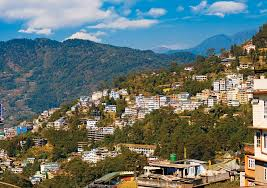
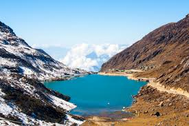
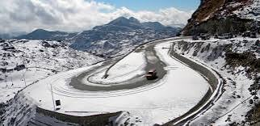
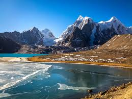
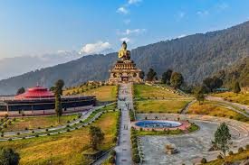
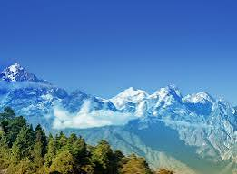
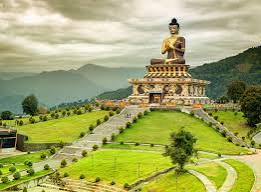
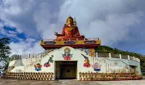
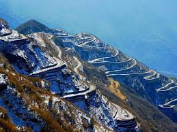
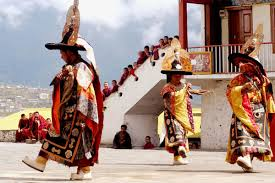

Rumtek Monastery
Buddhist monastery, seat of the Karmapa Lama.

Buddhist monastery, seat of the Karmapa Lama.
Ancient monastery with scenic views of Gangtok.
Museum and research center on Tibetan culture and Buddhism.
Viewpoint offering panoramic views of Kanchenjunga and the Himalayas.
Pedestrian street lined with shops, cafes, and restaurants.

Glacial lake at an altitude of 12,310 feet, known for its changing colors.
Shrine dedicated to Indian Army soldier Baba Harbhajan Singh.

Indo-China border crossing at an altitude of 14,140 feet.

Sacred lake at an altitude of 17,800 feet, surrounded by snow-capped mountains.
Valley known as the "Valley of Flowers" with hot springs.

Ancient monastery with religious artworks and panoramic views.
Ruins of the ancient capital of Sikkim, offering scenic views.

Oldest monastery in Sikkim, known for its peaceful surroundings.
UNESCO World Heritage Site, home to diverse flora and fauna.

Buddhist monastery with scenic views of mountains and tea gardens.
Park with a giant statue of Buddha overlooking the town.

Monastery with a giant statue of Guru Padmasambhava (Guru Rinpoche).
Pilgrimage site with replicas of four sacred pilgrimage centers of India.

Hilltop village offering views of the Himalayas and winding roads (Old Silk Route).
Adventure activity in the Teesta River's rapids.

Tibetan New Year celebrated with rituals, dance, and music.
Buddhist festival commemorating the birth, enlightenment, and death of Buddha.
Trails like Goecha La Trek, Dzongri Trek, and Green Lake Trek.
Opportunities to spot Himalayan birds in various sanctuaries and parks.